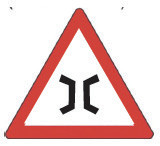
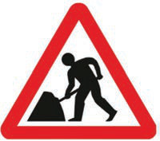

Zoezi la kwanza
1. Kuna umuhimu gani wa kuzingatia alama za usalama barabarani?
2. Kwa kuzingatia kanuni za usalama barabarani, utamsaidiaje rafiki yako anayetaka kuvuka barabara?
3. Eleza tahadhari utakazochua ukikutana na alama za usalama barabarani zifuatazo:

